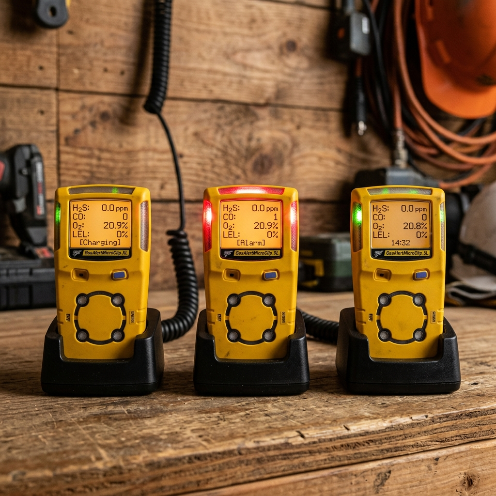

Course Navigation
Before beginning, review the player layout to understand the interface controls.
Interface Reference:
- Left Menu Panel: Track progress, inspect glossary terms, or download guidelines.
- Prev & Next Buttons: Switch active slides.
Overview
This training module has been developed to give an overview of the document practices in use for the SeaRose FPSO with respect to the Change Advice Notice Process or CANs.
When completed, the user will have an understanding of:
- CAN types
- CAN Process
- Revision Identifier Codes.
CAN Types
The Change Advice Notice (CAN) is categorized into three specific types to manage modifications. In this course, you will learn the answers to these questions:
- What is a Permanent Change Advice Notice?
- When is a Temporary Bypass CAN required?
- What defines an Urgent Engineering CAN?
- Who reviews and approves each specific CAN type?
- How are safety-critical controls bypassed safely?

Knowledge Check
The correct answer is B.
CAN 100 Process
The CAN 100 process governs standard engineering modifications. Click the timeline steps below to view active checklists:
⚠️ Click and inspect all three timeline nodes above to proceed.
Offshore - CAN 100 Process
Offshore execution requires strict safety case boundary mapping. Activities must undergo formal field reviews prior to work pack deployment.
Offshore Execution Constraints:
- Permit to Work (PTW) cross-referencing is mandatory.
- Onsite tool box talks must verify the specific safety limits specified in the approved CAN dossier.
- Hot work requires continuous safety barrier auditing.
Offshore Operations
All physical work packs on the SeaRose FPSO or deep sea drilling ships must reference the specific CAN ID matching the configuration change.
Onshore - CAN 100 Process
Onshore support acts as the design vetting clearinghouse. Lead discipline experts coordinate drawings updates and structural modeling calculations.
Onshore Vetting Focus:
- CAD drafting coordination and model reviews.
- Technical safety case alignment checks.
- Third-party validation coordination.
Onshore Engineering Support
Onshore teams hold responsibility for final master drawing check-ins. No red-lines are committed to standard libraries without their sign-off.
Knowledge Check
The correct answer is A.
CAN 400 Process
The CAN 400 workflow controls process alarm limits changes and safety-critical software upgrades. Perform both simulated actions below to complete and unlock the slide.
DCS Alarm Review
Review and approve shifted alarm configuration thresholds.
Software HIL Simulator
Run safety logic code shifts through simulator hardware loops.
⚠️ Complete both DCS alarm board review and HIL simulator testing to proceed.
Safety Requirements Locked
Perform the reviews on the left panel to load the gatekeeping deliverables.
Alarm & Software Gatekeeping
- DCS alarm modifications require alarm management board review.
- Independent verification is required to baseline safety settings.
Software Risk Control
- Safety logic code shifts must undergo hardware-in-the-loop (HIL) simulators testing.
- Software adjustments can cascade into unexpected tripping patterns. CAN 400 ensures every logic node is assessed.
CAN 600 Development
CAN 600 represents procedural changes and operational deviations from standard manuals.
Operational Deviations Scope:
- Temporary operations guidelines.
- Deviations from standard operating manuals limits.
- Authorized by the operations manager.
Procedural Changes
Operating procedures are legal bounds. Departures must be rigorously backed by safety matrix approvals.
Re-Building of CAN P&ID's
Drawing configuration integrity must be maintained. Redline drawings are committed to drafts for revision updates.
Redline Protocol:
- Field technicians must physically markup drawing shifts in red.
- Updates must match the as-built equipment.
- Drafting clerks convert redlines to official CAD revisions.
Drawing Integrity
P&IDs guide operations safety. Errors in drawings lead to operational hazard exposures.
Knowledge Check
The correct answer is B.
CAN's against Critical Documents
Critical safety documents represent platforms parameters defined in safety cases. Changes to these require regulatory notification.
Critical Document Triggers:
- Escape routes layouts.
- Fire and Gas protection envelopes.
- Safety Case operational parameters.
Regulated Integrity
Regulatory guidelines demand notification if safety-critical systems operational margins are shifted.
CAN's to Vendor Documents
Vendor datasheets and manual specifications must reflect physical equipment modifications.
Vendor Alignment:
- Verify custom tolerances are recorded.
- Update catalog manual reference documents.
- Log vendor software logic updates.
Vendor Integration
Equipment packages manuals must match as-built installation models to prevent operational error during maintenance.
Superseding/Void CAN's
When changes are superseded by subsequent modifications, the old CAN records must be officially locked and archived as void.
Archiving Rules:
- Cross-reference the new CAN ID on the old record.
- Flag status as 'Superseded' or 'Void' in system database.
- Lock previous documentation files to read-only.
Audit Trail
Clear status labeling prevents engineers from building designs off outdated modifications.
Incorporating CAN's into Parent Document
Temporary modifications must either be removed or officially merged into parent master files before CAN closeout.
Consolidation Stages:
- Verify as-built compliance in field.
- Merge changes into facility safety case databases.
- Close active CAN records officially.
Master Library Update
Closing files ensures drawings reflect physical equipment layouts, avoiding document sprawl.
CAN Revision Types
Revisions are categorized based on risk impacts:
Revision Categories:
- Major Revision: Alterations to pressure, piping specifications, or alarm logic. Requires re-assessment.
- Minor Revision: Typographical corrections or component vendor replacement matching original tolerances. Requires Technical Authority review only.
Change Scope Limits
Scope increases require major revision logs. Never slip extra modifications into minor logs.
CAN Revision Number
Revision numbering follows strict configuration controls standards.
Numbering Format:
- Draft revisions are represented with letters (Rev A, Rev B).
- Once officially approved, revisions are published as numerals (Rev 0, Rev 1).
- Void files carry explicit indicators.
Configuration Identifiers
Numeric values represent approved design baselines. Alphabetical letters are saved for drafts.
Knowledge Check
The correct answer is B.
Assessment Complete!
Enter your name below to generate your official Training Certificate.
Manshu